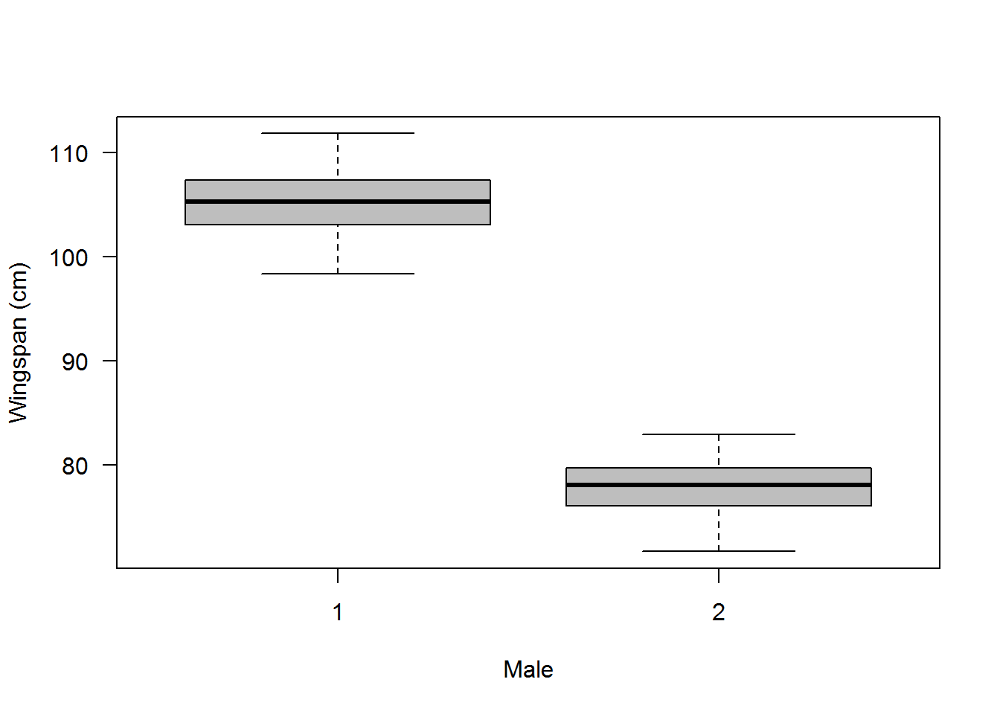
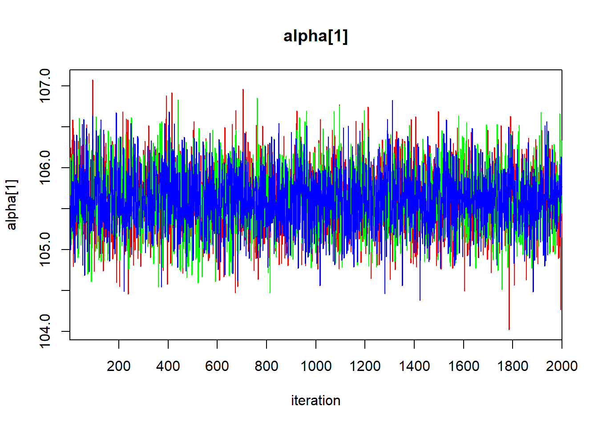
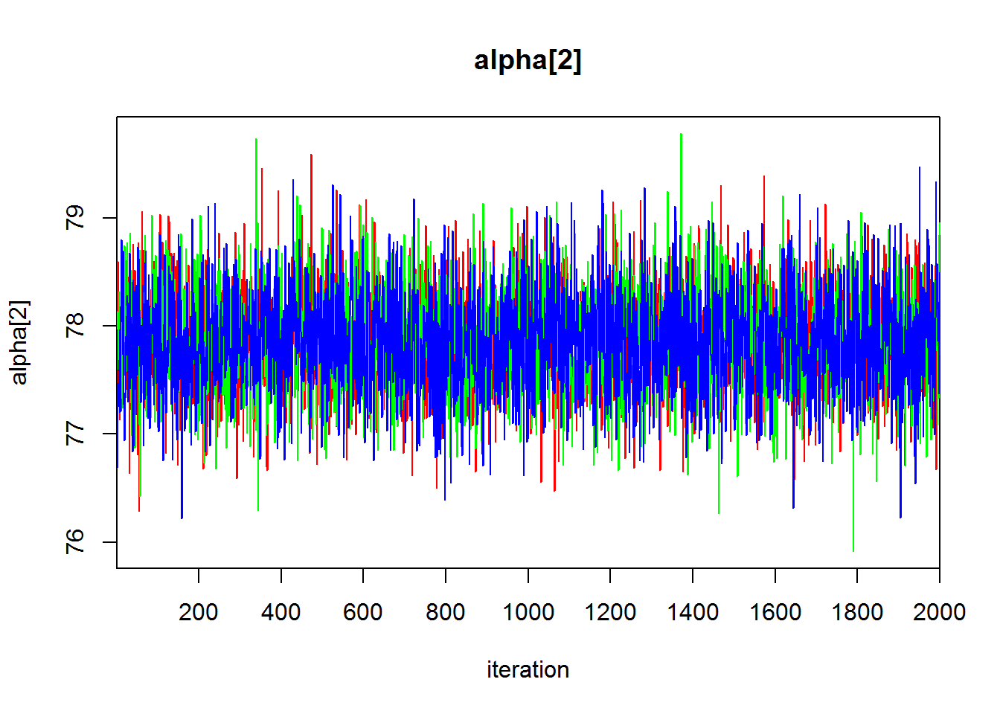
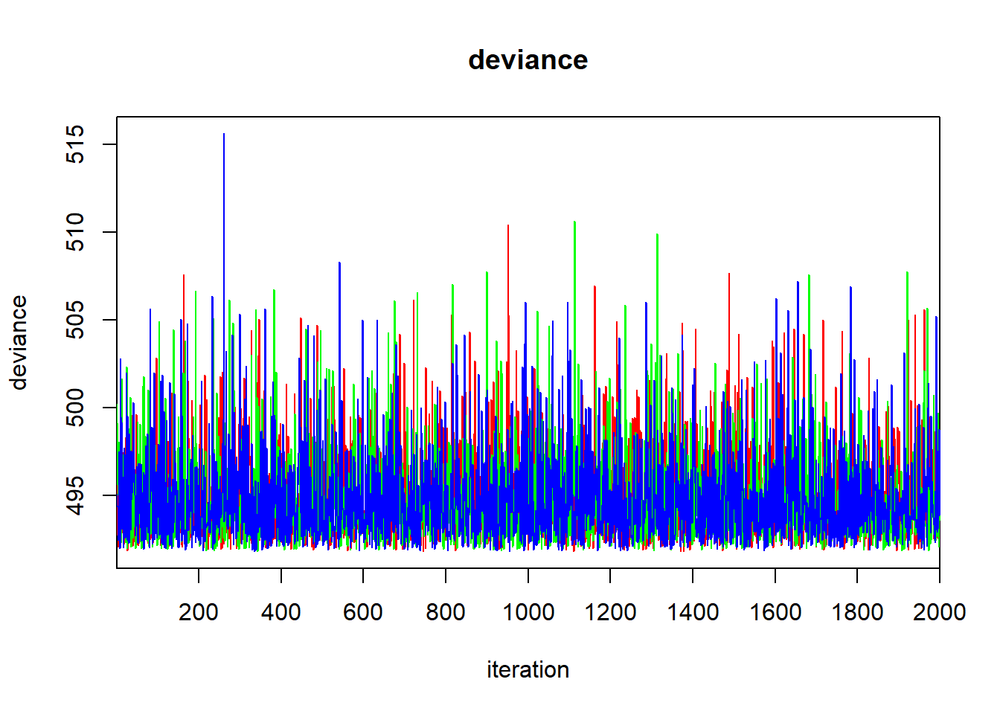
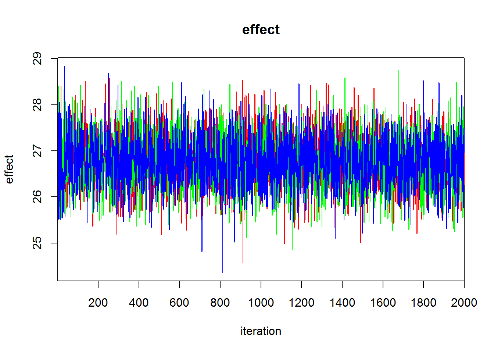
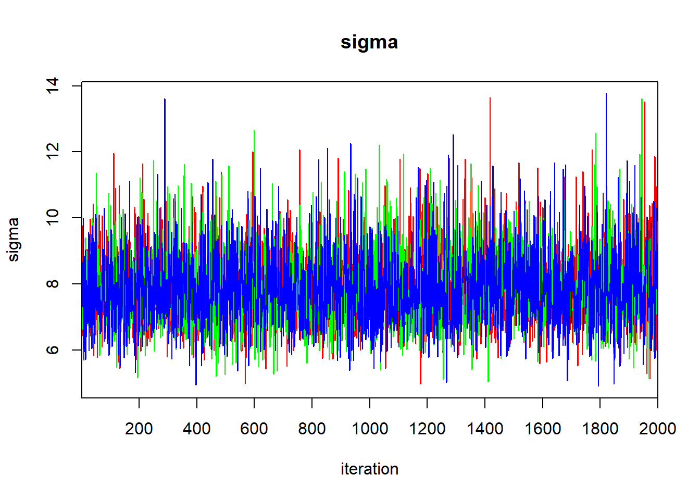

Introduction to Bayesian inference (and GLM)

Introduction
This week we introduced two new tools. The one that we spent the most time talking about was Bayesian inference. During our lab exercises this week, we will continue to learn about Bayesian methods for analyzing data, but we will turn the spotlight on the generalized linear model (GLM) as a natural extension of linear models. We will dig into exactly what this means with respect to model assumptions next week. For this week, we will practice analyzing the GLM using both Bayesian methods and maximum likelihood estimation (MLE). To do this, we will start out simple by fitting a linear model as a GLM to demonstrate the similarities, and we will finish by fitting a logistic regression model.
We are going to start changing up the format of lab assignments this week, as well. Instead of asking basic questions about programming or p-values, we are going to start pushing into the realm of reporting our methods and results as you might do in a thesis or a journal article. We will continue to hammer on model diagnostics and communication of effect sizes as we move forward, but it is also important that you start learning how to talk about these models if you are not yet familiar with it.
The reason why we are starting this now is because most of the tools that we have used thus far are ‘standard’ statistical analyses. These tools are relatively rigid in their structure and their application, and they have been used widely for a long time (with the exception of the model diagnostics and model selection tools you have been learning). Very often all that is required for reporting the methods for those tools is a simple declaration of their use, and the reporting of appropriate results. The GLM, and in a couple of weeks the GLMM, constitutes a broad class of models. It includes everything from the t-test, ANOVA, linear regression, and ANCOVA to extensions that allow the use of a large number of probability distributions. Because of this flexibility, it is important that we be able to clearly communicate the methods we use. Furthermore, the use of GLM often relies on the use of link funcitons. This can make it difficult for the average reader to interpret model coefficients, and will make it even more important for you to clearly communicate effect sizes.
Introduction to the GLM
A stroll down memory lane
We will start by introducing the GLM as an extension of the linear model. This means we are going to work with a continuous response that has a normal error distribution for our first example. We will demonstrate the relationships between other methods we have discussed and the GLM.
We start by simulating data about wingspans (in cm) of male and female peregrine falcons with different means and standard deviations for each sex. In the simulated data, males have a smaller wingspan and smaller variance for the measurement than females. The data that we will use are stored in the objects y (simulated wingspan), and x (sex, where 2 = male). For more detail, have a read through chapter 7.2.2 of your text book (have a read through it anyway!).
n1 <- 60 # Number of females
n2 <- 40 # Number of males
mu1 <- 105 # Population mean for females
mu2 <- 77.5 # Population mean for males
sigma1 <- 3 # Population SD for females
sigma2 <- 2.5 # Population SD for males
n <- n1+n2 # Total sample size
y1 <- rnorm(n1, mu1, sigma1) # Data for females
y2 <- rnorm(n2, mu2, sigma2) # Data for males
y <- c(y1, y2) # Aggregate both data sets
x <- rep(c(1,2), c(n1, n2)) # Indicator for male
boxplot(y ~ x, col = "grey",
xlab = "Male",
ylab = "Wingspan (cm)",
las = 1)
t-test
First, we will use a t-test to test for differences in wingspan between males and females. Because we have only two groups and a single, continuous response variable, this test would be our default in this situation.
# Run the t-test
t.test(y~x)
Welch Two Sample t-test
data: y by x
t = 50.39, df = 93.572, p-value < 2.2e-16
alternative hypothesis: true difference in means is not equal to 0
95 percent confidence interval:
27.16647 29.39530
sample estimates:
mean in group 1 mean in group 2
105.4694 77.1885 Here, we reject the null hypothesis at \(\alpha\) = 0.05. We can see that the 95% CI on the estimated difference in wingspan between sexes is 26-28 cm.
ANOVA
We could also analyze the effect of sex on wingspan using ANOVA even though we only have two groups in our explanatory variables. This should be familiar territory, but let’s go ahead and fit the model:
# Fit an ANOVA to test effect of sex on wingspan
mod.anova = aov(y~x)
# Summarize the model
summary(mod.anova)
Df Sum Sq Mean Sq F value Pr(>F)
x 1 19195 19195 2350 <2e-16 ***
Residuals 98 800 8
---
Signif. codes: 0 '***' 0.001 '**' 0.01 '*' 0.05 '.' 0.1 ' ' 1Here, we see that the results are essentially identical to our t-test. No surprises there if you have been following along. Finally, we can fit the model as a linear regression and we should obtain the same results because we now know that all of these tests are essentially the same thing.
# Fit a linear regression to test effect of sex on wingspan
mod.reg = lm(y~x)
# Summarize the model
summary(mod.reg)
Call:
lm(formula = y ~ x)
Residuals:
Min 1Q Median 3Q Max
-7.6107 -1.9299 -0.0264 1.8431 6.6335
Coefficients:
Estimate Std. Error t value Pr(>|t|)
(Intercept) 133.7503 0.8653 154.57 <2e-16 ***
x -28.2809 0.5834 -48.48 <2e-16 ***
---
Signif. codes: 0 '***' 0.001 '**' 0.01 '*' 0.05 '.' 0.1 ' ' 1
Residual standard error: 2.858 on 98 degrees of freedom
Multiple R-squared: 0.96, Adjusted R-squared: 0.9596
F-statistic: 2350 on 1 and 98 DF, p-value: < 2.2e-16
# Get an ANOVA table for the linear regression model
anova(mod.reg)
Analysis of Variance Table
Response: y
Df Sum Sq Mean Sq F value Pr(>F)
x 1 19195.4 19195.4 2350.1 < 2.2e-16 ***
Residuals 98 800.4 8.2
---
Signif. codes: 0 '***' 0.001 '**' 0.01 '*' 0.05 '.' 0.1 ' ' 1Once again, we see that the results are essentially identical between the t-test, the ANOVA, and the linear regression. Now, we will show that the results are also the same if we test the effect of sex on wingspan using a GLM.
GLM as a linear model
Here we will demonstrate that the GLM is simply an extension of the linear models with which we have already worked. More appropriately, the linear model is just a special case of the GLM.
Maximum likelihood estimation
The syntax in R for using GLM is essentially identical to the syntax for using LM. All we are going to do is add a ‘g’ to the name of the lm function, and we will specify a distributional family for the analysis. Let’s continue on with our falcon model here to demonstrate the similarity. If we assume that the response takes on a normal, or Gaussian, distribution for these models, then the results should be identical to what we got from our linear models above. In fact, the glm function in R even uses the Gaussian as the default value for the argument family just in case you were starting to doubt me.
# Fit a GLM to test effects of sex on wingspan,
# assuming a Gaussian distribution
mod.glm = glm(y~x, family = 'gaussian')
# Summarize the model
summary(mod.glm)
Call:
glm(formula = y ~ x, family = "gaussian")
Deviance Residuals:
Min 1Q Median 3Q Max
-7.6107 -1.9299 -0.0264 1.8431 6.6335
Coefficients:
Estimate Std. Error t value Pr(>|t|)
(Intercept) 133.7503 0.8653 154.57 <2e-16 ***
x -28.2809 0.5834 -48.48 <2e-16 ***
---
Signif. codes: 0 '***' 0.001 '**' 0.01 '*' 0.05 '.' 0.1 ' ' 1
(Dispersion parameter for gaussian family taken to be 8.167845)
Null deviance: 19995.85 on 99 degrees of freedom
Residual deviance: 800.45 on 98 degrees of freedom
AIC: 497.79
Number of Fisher Scoring iterations: 2The results are identical to what we got above from our t-test, ANOVA, and our linear regression model!
You’ll note that if you try to use the anova function from base R, or the Anova function from the car package to summarize this model you get some weird output. That is because these tools are actually doing something entirely different for objects that result from glm. The reason for this? We are now fitting our models with maximum likelihood estimation, and we are no longer relying on least squares. Therefore, the default behavior of the anova function is to report on the deviance of the model, and the default behavior of the Anova function is to conduct a likelihood ratio test comparing the model to another model (if specified) or to the null model if no other is specified. This is one tool that we can now use to compare models to see if they are ‘significantly’ different from one another, although I will not cover it much further in this class unless by request (the possibilities are endless).
Bayesian model
Now that we have fit the GLM in maximum likelihood estimation using the default functions in R, let’s also demonstrate the approach using Bayesian methods in JAGS. Once again, the results should be identical if we make certain assumptions, but the path we follow to get there differs a little.
These models are really easy to specify using the base R functions. But, we need to step things up a notch if we are going to be able to specify them in the BUGS language. For tools like Bayesian analysis of fixed-effects ANOVA in JAGS, this will draw heavily on the knowledge you have built regarding the formulation of the linear model. For the sake of demonstration (and because we know these tools are all the same thing) we will fit an ANOVA to describe differences in wingspan between sexes. In reality, we would use the t-test as a default. But, in reality, most of you will probably never use JAGS for t-tests (even if it is wicked cool!).
For what it is worth, fitting an ANOVA in JAGS is considerably less intuitive than fitting a linear regression or a GLM in most cases. Also for what it is worth, we could analyze these same data using t-test, an ANOVA, a linear regression, or a GLM in JAGS. The Gibbs sampler does not care. It just does the math that you tell it to do. So, you have to make sure you tell it to do the right thing!!
Start by specifying the model
This model specification is slightly different than what is presented in Kery 2010. the reason for this is that the sink() function used in the book can act funny if we are writing to certain directories, file systems, etc, and (really) because your homeworks won’t compile without physically writing the model to a file.
modelString = "
model {
# For each observation (row in the data)
for(i in 1:n){
# Likelihood
Y[i] ~ dnorm(mu[i], tau)
# Linear predictor of mean response
mu[i] <- alpha[x[i]]
}
# Priors
# Separate intercepts for each sex
for(i in 1:n.sexes){
alpha[i] ~ dnorm(0, 0.001)
}
# Shared variance
sigma ~ dunif(0, 100)
tau <- 1/sigma
# Derived estimate of differences
# between sexes
effect <- alpha[1] - alpha[2]
}
"
# Write the model to a file
writeLines(modelString, "falcomodel.txt")Bundle the data for JAGS
Provide initial values for the Gibbs sampler
We want to give the MCMC sampler some starting values to get the chains running, and we want to make sure that those are randomly sampled from what we think is the reasonably credible parameter space (i.e. our prior).
# Form initial values
inits = function(){
list(
alpha = rnorm(2, 0, 10),
sigma = runif(1, 0, 100)
)
}Parameters to monitor during estimation
Here, we pass a vector of named parameters from our model file that we want to monitor during estimation.
MCMC Settings
ni = 15000 # Number of samples (including burn-in)
nb = 5000 # Burn-in samples
nt = 5 # Thinning rate
nc = 3 # Number of chainsRun the model
We load the R2jags library and run the model. This is slightly different from the syntax that is used by Kery (2010) for running the model in WinBUGS using the R2WinBUGS package.
The biggest differences here are:
the name of the function has changed from
bugstojags,we don’t need to specify
debug=TRUElike we need to for thebugsfunction, andwe don’t need to specify the bugs directory when we use the
jagscommand.
# Load the R2jags library
library(R2jags)
# Run the model
falco.model = jags(data = falco.data,
inits = inits,
parameters.to.save = params,
model.file = "falcomodel.txt",
n.iter = ni,
n.burnin = nb,
n.thin = nt,
n.chains = nc,
working.directory = getwd()
)Print the model results & assess convergence
When we print our results, we get a table of model coefficient estimates, along with the uncertainty associated with those estimates and a couple of pieces of information about convergence diagnostics. From this table, we can see that the mean \(\pm\) SD wingspan of female peregrin falcons (alpha[1]) is about 105 \(\pm\) 0 cm and the mean wingspan of male peregrin falcons is about 77 \(\pm\) 0 cm. The mean estimated difference in wingspans between males and females is about 28, and the 95% CRI is 27 - 29 cm. We know that this difference is statistically significant at \(\alpha\) = 0.05 because the 95% CRI does not include zero.
print(falco.model, digits = 2)
Inference for Bugs model at "falcomodel.txt", fit using jags,
3 chains, each with 15000 iterations (first 5000 discarded), n.thin = 5
n.sims = 6000 iterations saved
mu.vect sd.vect 2.5% 25% 50% 75% 97.5% Rhat n.eff
alpha[1] 105.45 0.37 104.70 105.20 105.44 105.70 106.18 1 6000
alpha[2] 77.17 0.46 76.25 76.85 77.17 77.48 78.07 1 6000
effect 28.28 0.59 27.10 27.89 28.28 28.67 29.48 1 6000
sigma 8.50 1.26 6.38 7.60 8.37 9.24 11.36 1 2800
deviance 494.91 2.63 491.99 493.01 494.18 496.08 501.89 1 6000
For each parameter, n.eff is a crude measure of effective sample size,
and Rhat is the potential scale reduction factor (at convergence, Rhat=1).
DIC info (using the rule, pD = var(deviance)/2)
pD = 3.5 and DIC = 498.4
DIC is an estimate of expected predictive error (lower deviance is better).Assess convergence

More on GLM to come
In the preceding sections we looked at the GLM as an extension of linear models, and indeed this is the case. We will take an in-depth look at these models during the coming weeks and continue to discuss implementation and interpretation as we move forward. For now, we will get acquainted with a couple of simple formulations of the model to get our feet wet.
Your first Bayesian model
Binomial logistic regresion
For this week’s assignment, we will take another look at the chick survival data that we played with in class for lecture. For a detailed explanation fo the data, please see the lecture module. Briefly, the data set contains information on chicken and duck survival through various life-history stages at my place.
We start by reading in the data:
# Read in the data and save it to a named object
birds = read.csv('farmdata.csv')
# Drop the geese
birds <- birds[birds$species!='goose', ]Earlier in the week, we used this data set to estimate the probability of chick survival to fledge across all species and cohorts. For lab this week, I will ask you to continue analyzing these data and actually attempt to write your first methods section for this stuff.
Let’s start by running the same model as we did in lecture:
# Specify the model
modelstring="
model {
# Likelihood
for(i in 1:nobs){
y[i] ~ dbin(p, N[i])
}
# Priors
p ~ dbeta(a, b)
a <- 1
b <- 1
}
"
# Write the model to a text file
writeLines(modelstring,con="chickSurvival.txt")
# Package the data in a list
chick.data = list(
nobs = nrow(birds),
y = birds$fledged,
N = birds$hatched
)
# Parameters monitored
parameters <- c("p")
# Initial values
inits <- function(){list(p=runif(1,0,1))}
# MCMC settings
ni <- 33000 # Number of draws from posterior (for each chain)
nt <- 3 # Thinning rate
nb <- 3000 # Number of draws to discard as burn-in
nc <- 3 # Number of chains
# Call jags and run the model
chick.model <- jags(chick.data,
inits=inits,
parameters,
"chickSurvival.txt",
n.chains = nc, n.thin = nt,
n.iter = ni, n.burnin = nb,
working.directory = getwd()
) Your mission
Your lab assignment for this week is two-fold.
First I want you to modify the model above to allow survival to vary between bird species. You can do this in any number of conceivable ways. For example, you could write the model so that it is similar to the model of wingspan above for the falcon example, or you could look into your text book for any number of parameterizations (see, for example, model specifications in Chapters 17-19). Basically, all you need to do here is to adapt the prior in the chickSurvival model above to use a loop just like the falco.model earlier in this tutorial. Don’t forget to change the data and priors that you pass to JAGS, too!
Second Write a brief methods and results section for your model. The methods should include a few logically organized sentences about the data (e.g. testing effects of this on that), the model structure (likelihood and priors), diagnostics (\(\hat{r}\) and n.eff), and model settings (burn-in, thinning rate, number of chains, and number of samples).
Third Write an even briefer results section indicating any significant differences in survival between bird species, with at least one graph of the posterior distributions or a derived parameter showing the difference in estimated surival between them.
What to turn in
Your working script for the analysis
Your methods and results section with min 1 figure as a separate Word file.
This work is licensed under a Creative Commons Attribution 4.0 International License. Data are provided for educational purposes only unless otherwise noted.